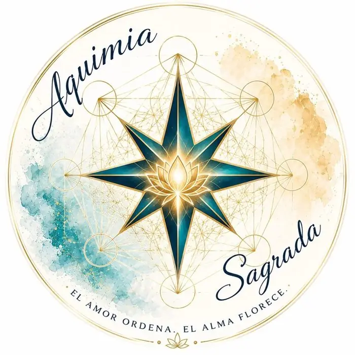

El amor ordena, el alma florece.
Constelaciones Familiares
Un método sistémico que revela los vínculos invisibles entre generaciones. Como estrellas de un mismo cúmulo, cada miembro de la familia ocupa un lugar y una fuerza que, al ordenarse, libera al sistema entero.
- Libera lealtades familiares inconscientes
- Restaura el orden y la pertenencia
- Sana patrones heredados repetitivos
Reiki
Canalización de energía universal a través de las manos para equilibrar el cuerpo, la mente y el espíritu. Una corriente sutil que disuelve bloqueos y devuelve la vitalidad a cada capa del ser.
- Reduce el estrés y la ansiedad
- Equilibra los centros energéticos
- Favorece la relajación profunda
Barras de Access
Treinta y dos puntos sobre la cabeza que, al ser tocados suavemente, disuelven creencias limitantes acumuladas durante toda una vida. Una técnica precisa como un mapa estelar, dirigida al cambio real.
- Libera creencias y patrones mentales
- Amplía la claridad y la posibilidad
- Efecto notable desde la primera sesión
Registros Akáshicos
El archivo etérico donde queda inscrita cada experiencia del alma a través del tiempo. Consultarlo es abrir un libro cuyas páginas se despliegan en constelaciones de respuestas y propósito.
- Claridad sobre el propósito de vida
- Comprensión de patrones kármicos
- Guía para decisiones importantes
Masajes Holísticos
Manos que leen el cuerpo como un territorio propio, liberando tensión acumulada capa tras capa. Un trabajo que integra técnica y presencia para devolver al cuerpo su estado natural de calma.
- Alivia tensión muscular profunda
- Mejora la circulación y el descanso
- Reconecta cuerpo y mente
Reflexología
Cada punto de la planta del pie es una puerta hacia un órgano o sistema del cuerpo. Presionar con precisión estos puntos es activar un mapa completo de bienestar, trazado como una constelación.
- Estimula el equilibrio de órganos internos
- Mejora la circulación en extremidades
- Induce un descanso profundo
Senderismo Holístico
Caminatas conscientes en la naturaleza que combinan respiración, silencio y movimiento. Un sendero físico que, paso a paso, se convierte también en un camino interior bajo un cielo abierto.
- Reduce el ruido mental y el estrés
- Fortalece cuerpo y sistema respiratorio
- Reconecta con los ciclos naturales